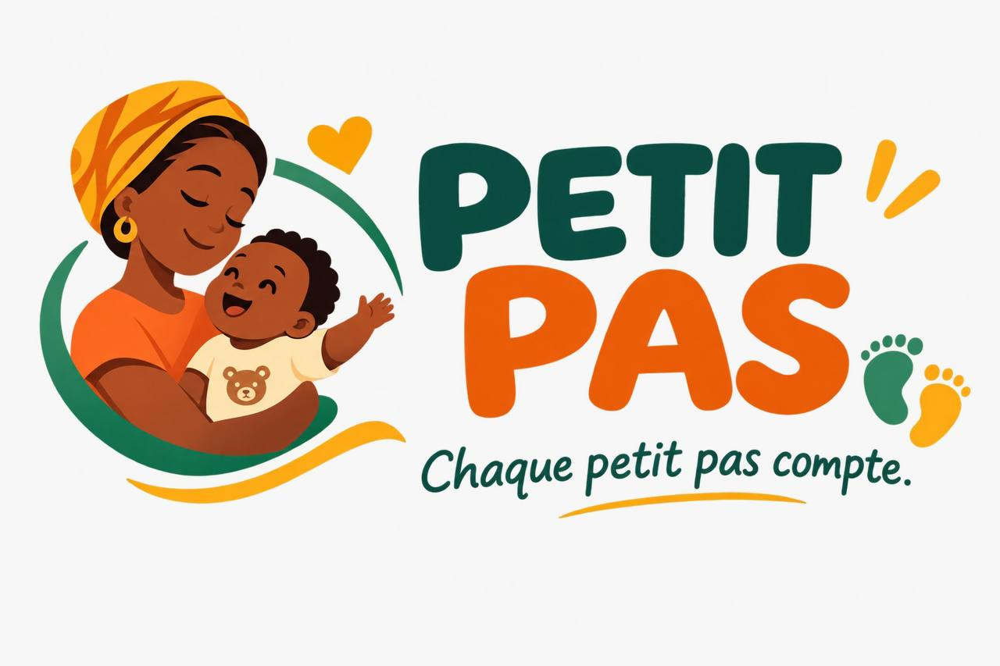

Suivi Petit Pas de l'enfant
1 / 41. L'enfant sourit-il ou regarde-t-il votre visage quand vous lui parlez ?
🔊 Eʋegbe : Đe ɖevia kona alo kpɔa wò ŋkume ne èle nu ƒom nɛa ?
Profil & Carnet de Santé
Parent • Docteur • Pharmacien • OrphelinatSélectionnez un enfant pour afficher ou exporter sa fiche CMS individuelle :
Vos données restent enregistrées uniquement sur votre téléphone (Aucun mot de passe compliqué, 100% protégé).
Appuyez pour écouter les consignes et adapter la voix dans votre langue maternelle :
Appel téléphonique direct GSM sans internet. En cas de convulsion, détresse respiratoire ou fièvre très élevée.
phone_in_talk Appeler le 118 ImmédiatementDécrire ce qui arrive à l'enfant
Par la voix, par images ou par écritCMS Adidogomé & Soignant
Joignez immédiatement une pharmacie proche ou plus éloignée (stocks SRO, Zinc, Paracétamol pédiatrique vérifiés) :
Mention éthique : Pas un diagnostic. Cet outil accompagne les familles et ne remplace jamais l'avis d'une sage-femme, d'un pharmacien ou d'un médecin. 100% hors-ligne et gratuit.